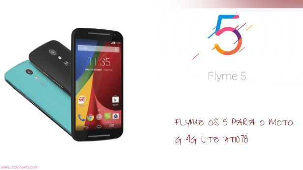

Flyme OS 5 para o MOTO G 4G LTE XT1078
Se você curte sistemas como o IOS da Apple ou a MIUI da Xiaomi você certamente vai amar o Flyme OS da Maizu, um sistema que une a elegância dos dois, criando um sistema belo e robusto. Agora em sua versão 5 com novos recursos e designer mais minimalista vai dar aquele ar de fluidez e elegância ao seu MOTO G.
Se você deseja dar uma conferida em todos os recursos e designer que esse sistema proporciona queira clicar aqui para acessar o site oficial da Meizu.
#REQUISITOS
-
Após ter baixado o arquivo da firmware, transfira para a memória interna do aparelho e o desligue.
Trasfira também o arquivo GAPPS.
Entre na recovery TWRP {ou a de seu uso} pressionando as teclas de VOL- e POWER por alguns segundos, quando então desça com atecla de VOL - ate _Recovery e comfirme com a tecla POWER.
Selecione WIPE, clique em ADVANCED WIPE, DATA_CACHE_DALVIK CACHE e Swipe to Wipe.
Agora que seu dispositivo está preparado para resceber um novo sistema, iremos instalar o arquivo da firmware que fora transferido a passos anteriores para a memória do aparelho.
Volte ao Menu Inicial e clique em INSTALL, feito isso selecione 'FLYME-OS_5_MOTO_G_4G_LTE_XT1078_.zip' e clique em Swipe to Install.
Após isto clique em 'reboot system' e aguarde o dispositivo iniciar, assim que o mesmo iniciar execute as configurações básicas do aaprelho e o deslique.
Com o aparelho desligado entre na recovey TWRP e clique em Install lá procure pelo arquivo 'GAPPS511.ZIP' e realize os mesmos passos anteriores deslizando em Swipe to install.
Após isto o aparelho já possuirá os serviços Google e você pode reiniciar o aparelho para desfrutar desse belíssimo sistema.
-
NÃO SOU CAÇADOR, MAS CAPTUREI ALGUMAS TELAS PARA VOCÊ


Então se obteve problemas com alguns dos passos listados acima, fique tranquilo a deixar seus comentários logo abaixo.